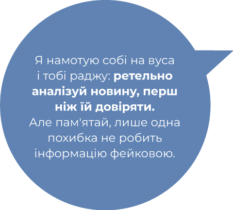
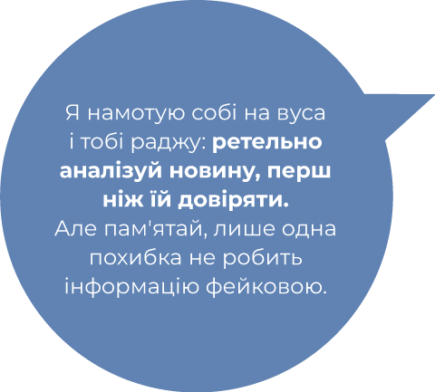

Прочитай публікацію та визнач, за якими критеріями, на твою думку, її потрібно аналізувати.
Нумо аналізувати новину
Де опублікована?
Публікація з соцмережі...чи варто таким відразу довіряти? Ні. Але йдемо далі.
Публікація з соцмережі...чи варто таким відразу довіряти? Ні. Але йдемо далі.
Подумай, звідки тобі стало відомо про новину? Авторитетне медіа чи невідомий телеграм-канал? Поцікався, хто стоїть за цим ресурсом: власник, автор, особа, що фінансує... Якщо ці люди невідомі – не вір.
!
Хто? Що? Де? Коли?
Інформації про Сімбу – зась. Деталей про подію мало. Коли відбулася олімпіада і в якому місті – теж невідомо.
Думаєш, це лише підозри? Але мій мрр-мрр носик мене ще ніколи не підводив, а тебе? Нумо рознюхувати далі.
Інформації про Сімбу – зась. Деталей про подію мало. Коли відбулася олімпіада і в якому місті – теж невідомо.
Думаєш, це лише підозри? Але мій мрр-мрр носик мене ще ніколи не підводив, а тебе? Нумо рознюхувати далі.
Ти можеш дати відповіді на усі ці запитання? Хто учасник події? Що саме відбулося? Як це все відбувалося? Де саме і в який час? Якщо відповіді є лише на одне чи два запитання, то інформація у новині є неповною і має викликати у тебе сумніви.
!
Чи є посилання на першоджерела?
Цікаво-цікаво. Посилання немає. Зате яка маніпуляція! "Ніхто не пише про цього героя. Але ми не опускаємо вуха"...
Цікаво-цікаво. Посилання немає. Зате яка маніпуляція! "Ніхто не пише про цього героя. Але ми не опускаємо вуха"...
Якщо у новині не вказали джерело, або "поважно" зазначили Британських вчених чи брата маминої подруги, ти будеш довіряти інформації з неї? От хто такі ці Британські вчені? Відсутність джерела чи розмите узагальнення свідчать про маніпулятивний характер публікації або її низьку якість.
!
Хто є експертом?
Ні експерта, ні точного автора немає. А канал "Котячі байки" не викликає довіри.
Ні експерта, ні точного автора немає. А канал "Котячі байки" не викликає довіри.
Експерт чи експертка повинні мати профільну освіту, щоб коментувати події. У них має бути досвід з конкретної теми. "Я вважаю цей фільм найгіршим за усю історію кіно!". Але людина, що коментує, не є експертом чи експерткою та не дивилася усі-усі фільми! Якщо "експерт/– ка" коментує все – від засобів проти кліщів до геополітичного вибору, ймовірно, ця людина не є професіоналом, якому тобі варто довіряти.
!
Чи присутні емоції або оціночні судження автора?
Після прочитання новини виникає палке бажання "вивести в коти" цього героя, чи не так? Хто ж як не ти вплине і зробить обіцянки-цяцянки дійсністю. Якщо тебе чіпляє написане, є велика ймовірність, що інформація фейкова.
Після прочитання новини виникає палке бажання "вивести в коти" цього героя, чи не так? Хто ж як не ти вплине і зробить обіцянки-цяцянки дійсністю. Якщо тебе чіпляє написане, є велика ймовірність, що інформація фейкова.
Емоційна лексика та власні судження автора можуть заважати тобі об'єктивно оцінити інформацію. Пам'ятай, що тобі треба навчитися сканувати текст на суб'єктивні думки авторів. Тоді ти з легкістю зрозумієш, чи для тебе висвітлюють факти, чи чиєсь ставлення до них. Якщо друге – не бери до уваги ці думки при ухваленні власних рішень.
!
Чи наведені фото та відеодокази?
Є лише фото нібито Сімби. А грамота за участь в олімпіаді, підтвердження? Отож-бо й воно!
Є лише фото нібито Сімби. А грамота за участь в олімпіаді, підтвердження? Отож-бо й воно!
Якщо події, описані у новині, можуть мати фото чи відеодокази – вони повинні бути зазначені. Але краще завжди перевіряй, чи візуальні підтвердження не підроблені.
!
 
